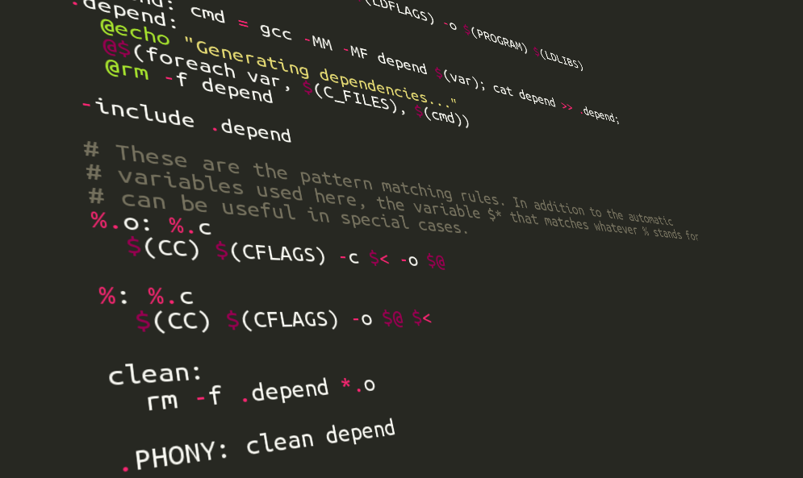

The problem with make for scientific workflows

The workflow problem solved once and for all in 1979?
As soon as the topic of scientific workflows is brought up, there are always a few make fans fervently insisting that the problem of workflows is solved once and for all with GNU make , written first in the 70’s :)
Personally I haven’t been so sure. On the one hand, I know the tool solves a lot of problems for many people. Also, there is something very attractive about buildling on a tool that you can be sure will be available on more or less every unix-like operating system, for decades to come.
On the other hand, the tool seems less suited for tasks where you have a dynamic number of outputs, such as in machine learning cross validation tasks with variable number of folds.
This is due to the way you specify dependencies: Rather than just specifying the order of the rules by their names, you specify the target file name pattern of the desired output, and let make figure out what rules it takes to create those. Thus when you have a variable or dynamically computed number of outputs anywhere in the workflow, it becomes hard - if not impossible - to know what these resulting file patterns will be. You simply can’t know before you started executing the workflow.
Because this was just my “intuitive understanding”, I was quite interested when I stumbled upon a paper that discusses this exact problem in some detail . In section 2.2 the authors explain a number of problems with it for the kind of use cases I have been thinking of.
They list the problems under three main categories:
- Files are represented by strings
- [Problems with] combinatorial dependencies
- Non-representable dependency structures.
I will quote some selected parts under each of the categories, below.
Files are represented by strings
"… from our perspective, make is a declarative language for specifying dependencies. This seems to be exactly what we want, and indeed it does solve some of the problems detailed above. make has several new problems, though, which result in its being not an ideal solution to our problem"
"… there are three serious problems …"
“The basic problem here is that to make, a file is represented by a string, its filename. For machine learning and natural language processing experiments, it is much more natural to represent a file as a set of key-value pairs. …”
[Problems with] combinatorial dependencies
“The second problem with make is that it is very difficult to specify combinatorial dependencies. If one continued to write the makefile above, one would eventually need to write a final all target to specify all the files which would need to be built. There are 60 such files […] There is no easy way in make of listing these 60 files in a natural manner. One can escape to a shell script, or use GNU make’s foreach function, but both ways are messy.”
Non-representable dependency structures
“The final problem with make also relates to dependencies. It is more subtle, but it turns out that there are some sorts of dependency structures which cannot be represented in make. Suppose I want to compare the effect of using one of three parsers, one of three part-of-speech-taggers and one of three chunkers for a summarization experiment. This involves three separate three-way distinctions in the makefile, where for each, there are three different commands that might be run. A non-working example is in Figure 3. The problem is that make pattern rules (rules using the % character) can only match the suffix or prefix of a filename. This makefile does not work because it requires the parser, chunker, and tagger to all be the last part of the filename before the type suffix.”
But by all means, have a look at the paper for yourself! :)
Some comments
I find this paper interesting in that it provides concrete use cases to a problem that I had only an intuitive understanding of before.
It might not completely hit the nail at its head with all the problem description. E.g, I don’t think being “filename based” versus “parameter based” is a problem at all, if you just have a powerful file name pattern mechanism that allows you to freely and flexible incorporate the parameter names and values at any desired place in the filename pattern. That is the case .e.g in Spotify’s luigi workflow tool , which we have been using in our work in Ola Spjuth’s group at UU .
The other two points, about some dependency graph patterns being impractical to work with, seem to touch close to the heart of the problem though. like I mentioned earlier that in make you have to specify file name pattern of the resulting dataset, to drive the upstream rules/tasks.
In cases where outputs of some tasks are either variable or when the whole dependency graph is branching into a large number of final targets, then specifying the final target file patterns can be extremely impractical to specify manually.
For these kind of use cases it seems it would be nicer to just specify the tasks, the indata, and how the data flows, from output of one task to input of another one, without needing to know the final resulting file name pattern in before hand. Thus a bit more “push-based” approach compared to “pull based”, and also with explicit wiring of data dependencies, rather than implicit ones based upon file name pattern rules (That is, more “dataflow” or “flow based programming” like).
Interestingly, this approach is taken in tools such as NextFlow and seemingly to a slighlty more limited extent in tools like BPipe . (EDIT: And definitely in our new Go-based library SciPipe ).
It should be mentioned though that python-based SnakeMake provides some constructs that makes some of the problems described above a lot more tractable to implement even though the basic execution mechanism is “pull-based” just like in make itself (you specify the desired target file pattern to drive upstream tasks) but it has a much better handling of named inputs and outputs than GNU make, and also a more powerful file pattern interpolation mechanism, where you can use python code to interpolate the file pattern in any way.
Let’s hope to see more dataflow inspired workflow tools in the future, but in the meanwhile, keep an eye on NextFlow, BPipe, and also SnakeMake, if you can live with its pull-based mechanism!
- UPDATE: I should clarify that the problems discussed below do not apply to some ways of working with make such as this interesting method by Pierre Lindenbaum , where the makefile is generated from an XML description , thus using make as a kind of “assembly language”, to which higher level workflow definitions are “compiled”. Pierre mentions a few other problems with make here though .*